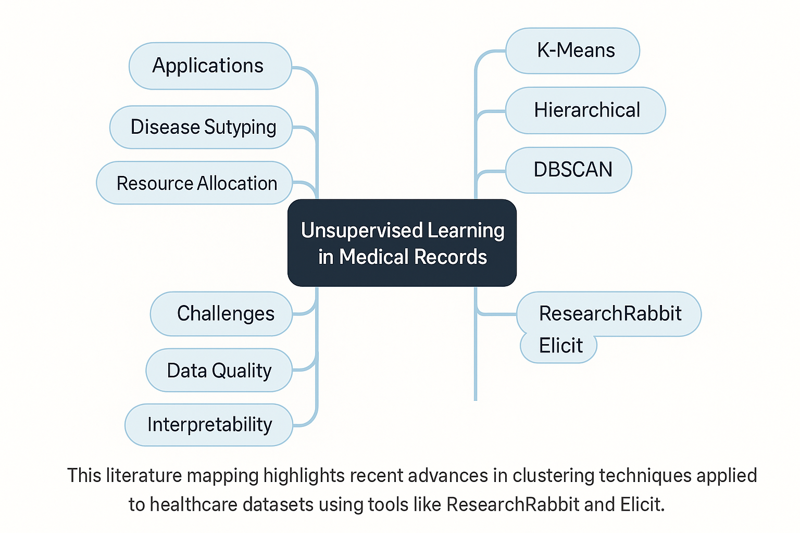

📊 Exit Ticket Summary

Insights: Most students understood the concept of supervised learning. A few requested more examples for clustering techniques.
Project: AI-Enhanced Digital Resource Hub for Educators
Topic: Machine Learning Basics
1. What is the primary goal of supervised learning?
2. Which algorithm is commonly used for classification tasks?
3. In unsupervised learning, the data is:
Insights: Most students understood the concept of supervised learning. A few requested more examples for clustering techniques.


Topic: Unsupervised Learning in Medical Records
This literature mapping highlights recent advances in clustering techniques applied to healthcare datasets using tools like ResearchRabbit and Elicit.
AI tools have completely changed how I approach teaching. From generating instant lesson summaries to creating custom quizzes, I can now focus more on engaging students creatively. This toolkit not only supports traditional instruction but opens new paths for student-led learning.